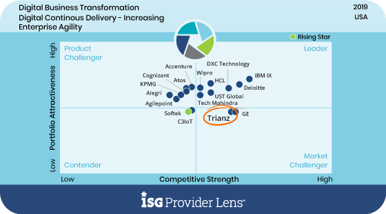

Mobile Application Design and Development
Create a sticky mobile B2B and B2C app ecosystem with low-cost, easy to-maintain code and modern user experiences.

Recognized as a ‘Market Challenger’ in the Digital Space by ISG

Recognized for best-in-class Advisory Excellence and Strong Digital